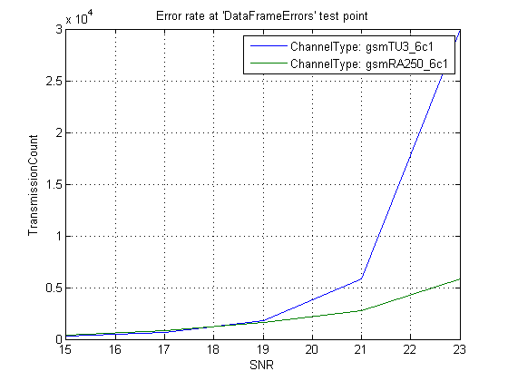

Error Rate Test Console - EGPRS Phase 2 Uplink Level B Simulation (Part II)
This demonstration shows how to use the Communications Toolbox™ error rate test console to simulate the Uplink level B modulation and coding Scheme 7 (UBS-7) channel defined in the 3GPP™ EDGE Evolution Enhanced GPRS Phase 2 (EGPRS2) standard [ 1, 2 ]. In part I, we showed how to use Communication Toolbox functions to implement the EGPRS2 UBS-7 system and how to construct a for-loop to obtain the system performance. In this part, we use the System Basic API to implement the EGPRS2 system and utilize the Error Rate Test Console to run parameterized simulations. The EGPRS2 UBS-7 system is implemented in the file named EGPRS2UBS7.m.
Contents
EGPRS2 UBS-7 System
The EGPRS2 UBS-7 system, EGPRS2UBS7, uses Basic System API, i.e. extends the testconsole.SystemBasicAPI class. The system defines signal-to-noise-ratio (SNR), channel type, number of samples per symbol, recursive least square (RLS) forgetting factor, number of decision feedback equalizer (DFE) forward and feedback taps, and equalizer delay as simulation parameters, i.e. test parameters. These test parameters can be controlled by a test console to run parameterized simulations.
% Instantiate an EGPRS2 UBS-7 system
egprs2Sys = EGPRS2UBS7
egprs2Sys =
Description: 'EGPRS Phase 2 UBS-7 Logical Channel'
SNR: 10
ChannelType: 'gsmTU50_6c1'
SamplesPerSymbol: 4
EqualizerForgettingFactor: 0.9000
EqualizerNumForwardTaps: 10
EqualizerNumFeedbackTaps: 6
EqualizerDelay: 4
Debug Mode
The system can be run by itself, which is referred as debug mode. The system does not generate any outputs in debug-mode. This mode is useful to debug the system using break points before running simulations through a test console. We run the system in debug mode and confirm that the system can be run without errors or warnings.
% Run the system to check for errors or warnings
run(egprs2Sys)
Error Rate Test Console
We use the Error Rate Test Console to run parameterized simulations of systems to obtain error rate performance metrics. The error rate test console can sweep through a set of test parameter values and collect error rate data. The Error Rate Test Console automatically utilizes a parallel computing environment created by the Parallel Computing Toolbox™. If a Parallel Computing Toolbox license exists and a MATLAB® pool is created, the Error Rate Test Console automatically detects the pool and distribute the simulation among multiple workers. Otherwise, simulations are run on a single core. Simulation duration can be drastically reduced if multiple workers are used.
Starting an Error Rate Test Console
We first create an Error Rate Test Console. When created without any arguments, the test console attaches to a default system called commtest.MPSKSystem.
% Instantiate an error rate test console
testConsole = commtest.ErrorRate
testConsole =
Description: 'Error Rate Test Console'
SystemUnderTestName: 'commtest.MPSKSystem'
FrameLength: 500
IterationMode: 'Combinatorial'
SystemResetMode: 'Reset at new simulation point'
SimulationLimitOption: 'Number of transmissions'
TransmissionCountTestPoint: 'Not set'
MaxNumTransmissions: 1000
We attach the EGPRS2 system using the attachSystem method of the test console. Since this system has a constant frame length and does not use either of the inputs provided by the Error Rate Test Console, the FrameLength property of the test console disappears after attaching the EGPRS2 system. For an example system that uses one of the inputs, see Error Rate Test Console - IEEE 802.11b Physical Layer Simulation.
% Attach the system to the test console attachSystem(testConsole, egprs2Sys) % Check test console properties testConsole
testConsole =
Description: 'Error Rate Test Console'
SystemUnderTestName: 'EGPRS2UBS7'
IterationMode: 'Combinatorial'
SystemResetMode: 'Reset at new simulation point'
SimulationLimitOption: 'Number of transmissions'
TransmissionCountTestPoint: 'Not set'
MaxNumTransmissions: 1000
Test Console Configuration
We need to configure the test console before running simulations. Configuration involves registering test points, specifying a simulation stop criteria, and setting test parameter sweep values. We can get the information needed to configure the test console using the test console INFO method.
% Get information on the test console and the attached system
info(testConsole)
Test console name: commtest.ErrorRate
System under test name: EGPRS2UBS7
Available test inputs: NumTransmissions, RandomIntegerSource
Registered test inputs: None
Registered test parameters: ChannelType, EqualizerDelay, EqualizerForgettingFactor,
EqualizerNumFeedbackTaps, EqualizerNumForwardTaps,
SNR, SamplesPerSymbol
Registered test probes: RxData1Bits, RxData2Bits, RxDataCRC, RxHeaderBits,
RxHeaderCRC, TxData1Bits, TxData2Bits, TxDataCRC,
TxHeaderBits, TxHeaderCRC
Registered test points: None
Metric calculator functions: None
Test metrics: None
Test Point
We see that the EGPRS2 system has registered probes for transmitted data cyclic redundancy check (CRC), TxDataCRC, and received data CRC, RxDataCRC. We can use the data collected with these probes to decide if a frame is in error. To use the CRC information for frame error rate calculation, we define a test point named 'DataFrameErrors' that uses these two probes. We can see the new test point using the INFO method. Note that the test point uses the default error calculator function, commtest.ErrorRate.defaultErrorCalculator, to calculate the test metrics. The test metrics are error count, transmission count, and error rate. This default metric calculator compares matrices from two probes. The number of unmatching elements is logged as error count and the number of compared elements is logged as transmission count. The ratio of error count to transmission count is the error rate. Since CRC is a scalar number, the 'DataFrameErrors' test point compares scalars. Error count metric is the number of frame errors and transmission count metric is the number of simulated frames.
% Create a new test point to calculate data frame error rate registerTestPoint(testConsole, 'DataFrameErrors', ... 'TxDataCRC', 'RxDataCRC'); % Check that the new test point is created info(testConsole)
Test console name: commtest.ErrorRate
System under test name: EGPRS2UBS7
Available test inputs: NumTransmissions, RandomIntegerSource
Registered test inputs: None
Registered test parameters: ChannelType, EqualizerDelay, EqualizerForgettingFactor,
EqualizerNumFeedbackTaps, EqualizerNumForwardTaps,
SNR, SamplesPerSymbol
Registered test probes: RxData1Bits, RxData2Bits, RxDataCRC, RxHeaderBits,
RxHeaderCRC, TxData1Bits, TxData2Bits, TxDataCRC,
TxHeaderBits, TxHeaderCRC
Registered test points: DataFrameErrors
Metric calculator functions: @commtest.ErrorRate.defaultErrorCalculator
Test metrics: ErrorCount, TransmissionCount, ErrorRate
Setting the Test Parameter Sweep Values
Next, we need to specify the test parameter sweep values for the simulation. We can get the full list of the available test parameters using the INFO method.
% Get the registered test parameters
info(testConsole)
Test console name: commtest.ErrorRate
System under test name: EGPRS2UBS7
Available test inputs: NumTransmissions, RandomIntegerSource
Registered test inputs: None
Registered test parameters: ChannelType, EqualizerDelay, EqualizerForgettingFactor,
EqualizerNumFeedbackTaps, EqualizerNumForwardTaps,
SNR, SamplesPerSymbol
Registered test probes: RxData1Bits, RxData2Bits, RxDataCRC, RxHeaderBits,
RxHeaderCRC, TxData1Bits, TxData2Bits, TxDataCRC,
TxHeaderBits, TxHeaderCRC
Registered test points: DataFrameErrors
Metric calculator functions: @commtest.ErrorRate.defaultErrorCalculator
Test metrics: ErrorCount, TransmissionCount, ErrorRate
We can set a registered test parameter to a scalar value within the range of the valid values. We want to set the equalizer forgetting factor to 0.95. First, we check the valid range for forgetting factor values.
% Get valid values for equalizer forgetting factor getTestParameterValidRanges(testConsole, 'EqualizerForgettingFactor')
ans =
0 1
Since 0.95 is grater than or equal to 0 and less than or equal to 1, we can set it using the setTestParameterSweepValues method of the test console.
% Set the forgetting factor to 0.95 setTestParameterSweepValues(testConsole, 'EqualizerForgettingFactor', 0.95);
We can also set a registered test parameter to a vector. We want the test console to run simulations for SNR values from 5 dB to 15 dB, with 2 dB step size.
% Get valid values for SNR getTestParameterValidRanges(testConsole, 'SNR') % Set the sweep values for the test parameter SNR setTestParameterSweepValues(testConsole, 'SNR', 5:2:15);
ans = -50 100
We want to simulate for these SNR values for two channels. One channel is a typical urban area with 6 taps as defined in case 1 [ 3 ] for a mobile speed of 3 km/h ('gsmTU3_6c1'). The other channel is a typical rural area with 6 taps as defined in case 1 [ 3 ] for a mobile speed of 250 km/h ('gsmRA250_6c1'). For a description of these channels, see the help for STDCHAN function. The predefined channels can be obtained by checking the valid range for the ChannelType test parameter. New channels can be added to the EGPRS2 system by modifying the ChannelTypeEnums property and set.ChannelType method.
% Get valid values for ChannelType getTestParameterValidRanges(testConsole, 'ChannelType') % Set the sweep values for the test parameter ChannelType setTestParameterSweepValues(testConsole, 'ChannelType', ... {'gsmTU3_6c1', 'gsmRA250_6c1'});
ans =
Columns 1 through 4
'gsmRA250_6c1' 'gsmRA250_4c2' 'gsmHT50_12c1' 'gsmHT50_12c2'
Columns 5 through 8
'gsmHT50_6c1' 'gsmHT50_6c2' 'gsmTU3_12c1' 'gsmTU3_12c2'
Columns 9 through 13
'gsmTU3_6c1' 'gsmTU3_6c2' 'gsmEQ100_6' 'gsmTI3_2' '3gppTU3'
Columns 14 through 16
'3gppRA250' '3gppHT100' 'gsmTU50_6c1'
Simulation Stop Criteria
The test console can stop the simulation after reaching a given number of transmissions, after reaching a given number of errors, or after reaching either number of transmissions or number of errors. We want to stop after simulating a given number of frame errors. Therefore, we set the SimulationLimitOption property as 'Number of errors'.
testConsole.SimulationLimitOption = 'Number of errors';
We then specify the number of frame errors to be simulated as 100 by setting the MinNumErrors property of the test console.
testConsole.MinNumErrors = 100;
We need to specify which error count metric will be used to determine if the specified number of errors (two in this case) is reached. We set ErrorCountTestPoint to 'DataFrameErrors'. Since 'DataFrameErrors' test point counts frames, the simulations will stop after simulating two frames.
testConsole.ErrorCountTestPoint = 'DataFrameErrors';
Running the Simulation
We run the simulation using the run method. To limit the simulation time for this demonstration, we set the simulation stop criteria as 'Number of errors or transmissions' and set MaxNumTransmissions to two.
% Limit simulation time by setting the maximum number of frames to two testConsole.SimulationLimitOption = 'Number of errors or transmissions'; testConsole.MaxNumTransmissions = 2; testConsole.TransmissionCountTestPoint = 'DataFrameErrors'; % Run the simulation run(testConsole)
Running simulations...
Once the simulation is run, we obtain the results of the simulation by calling the getResults method, which returns a results object.
% Get the results
egprs2Results = getResults(testConsole)
egprs2Results =
TestConsoleName: 'commtest.ErrorRate'
SystemUnderTestName: 'EGPRS2UBS7'
IterationMode: 'Combinatorial'
TestPoint: 'DataFrameErrors'
Metric: 'ErrorRate'
TestParameter1: 'ChannelType'
TestParameter2: 'None'
Since the simulation takes a long time, we use saved results for a run of 100 frame errors in the rest of this demonstration. We ran the simulation on a four core machine, both with a MATLAB pool that had four workers and without the MATLAB pool, i.e. serial simulation on a single core. The serial simulation took about six hours while the parallel simulation took about 1.5 hours. We reduced simulation run time by a factor of 3.7 using parallel processing.
% Load the results for 100 frame errors load EGPRS2UplinkDemo2Results
Examining the Results
We can either get the metric data in matrix format or plot it using the results object, egprs2Results.
Getting the Metric Data
We can get the error rate data for this simulation using the getData method of the results object, egprs2Results. We first need to configure egprs2Results to provide a matrix whose columns and rows are indexed for SNR and channel type, respectively. TestParameter1 property specifies the column index, while TestParameter2 specifies the row index.
% Set the row index as ChannelType egprs2Results.TestParameter1 = 'ChannelType'; % Set the column index as SNR egprs2Results.TestParameter2 = 'SNR'; % Get the results data frameErrorRate = getData(egprs2Results)
frameErrorRate =
0.3268 0.1458 0.0558 0.0172 0.0033
0.2740 0.1215 0.0628 0.0362 0.0171
We can check that the specified number of errors is reach by setting the Metric property to 'ErrorCount'.
% Set the active metric to 'ErrorCount' egprs2Results.Metric = 'ErrorCount'; % Get the error count numErrors = getData(egprs2Results)
numErrors = 100 100 100 100 100 100 100 100 100 100
Plotting the Metric Data
We can plot the simulation results using the PLOT method of the results object. We first need to configure egprs2Results to plot SNR vs. frame error rate curves for both channel types. TestParameter1 specifies the x-axis and TestParameter2 specifies the independent parameter for lines.
% Set the x-axis as SNR egprs2Results.TestParameter1 = 'SNR'; % Set the independent parameter for lines as ChannelType egprs2Results.TestParameter2 = 'ChannelType'; % Set the active metric to 'ErrorRate' egprs2Results.Metric = 'ErrorRate'; % Plot the results data figure; semilogy(egprs2Results)

We can also plot the number of simulated frames, by setting the Metric property to 'TransmissionCount'. Wee see that the number of simulated frames increase with increasing SNR.
% Set the active metric to 'TransmissionCount' egprs2Results.Metric = 'TransmissionCount'; % Plot the results data figure; plot(egprs2Results)
Summary
We utilized the Error Rate Test Console to simulate an EGPRS2 system defined using the System Basic API. We specified SNR and channel type as two sweep parameters. We registered a test point to detect and count data frame errors. We plotted SNR vs. frame error rate curves for two different channels. We used Parallel Computing Toolbox to speed up the simulations by a factor of 3.7.
Further Exploration
You can modify parts of this demo or the system definition, EGPRS2UBS7.
You can create other test points to get error rate for data and header bits. You can create test points to get header error rate and data error rate separately.
You can add more probes to the system and simulate error rates at different points, such as the equalizer output symbol error rate.
You can add more test parameters by adding new public properties and registering these as test parameters in the register method of EGPRS2UBS7 system.
Selected Bibliography
- 3GPP TS 44.060, "GPRS; MS-BSS interface; RLC/MAC protocol," Release 8, v8.2.0, 2008-2009
- 3GPP TS 45.001, "Radio Access Network; Physical layer on the radio path; General description," Release 7, v7.8.0, 2008-08
- 3GPP TS 45.005, "Radio Access Network; Radio transmission and reception," Release 8, v8.1.0, 2008-05